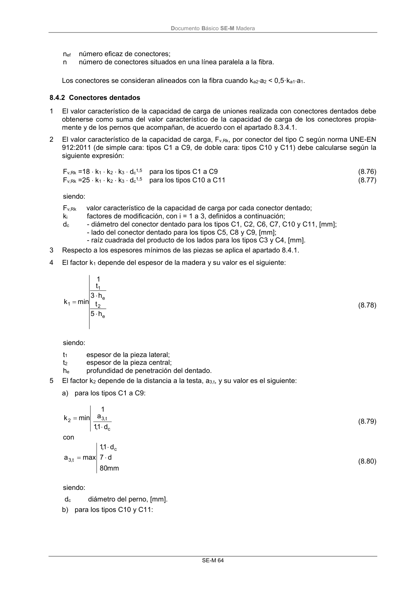

DB-SE-M Madera · edición 2019-12-20 · capa oficial
Documento DB-SE-M-oficial · SHA-256 del PDF 26b5819839ebfda78b0b119c5e76a0a37773b0d763c05688541870075df93718
Copia fiel del PDF fuente · Fuente oficial
Ficha de la disposición en la fuente oficial
Formatos: JSON del segmento · Markdown
8.4.2 Conectores dentados 1 El valor característico de la capacidad de carga de uniones realizada con conectores dentados debe obtenerse como suma del valor característico de la capacidad de carga de los conectores propia- mente y de los pernos que acompañan, de acuerdo con el apartado 8.3.4.1. 2 El valor característico de la capacidad de carga, Fv,Rk, por conector del tipo C según norma UNE-EN 912:2011 (de simple cara: tipos C1 a C9, de doble cara: tipos C10 y C11) debe calcularse según la siguiente expresión: Fv,Rk =18 k1 k2 k3 dc1,5 para los tipos C1 a C9 (8.76) Fv,Rk =25 k1 k2 k3 dc1,5 para los tipos C10 a C11 (8.77) siendo: Fv,Rk valor característico de la capacidad de carga por cada conector dentado; ki factores de modificación, con i = 1 a 3, definidos a continuación; dc - diámetro del conector dentado para los tipos C1, C2, C6, C7, C10 y C11, [mm]; - lado del conector dentado para los tipos C5, C8 y C9, [mm]; - raíz cuadrada del producto de los lados para los tipos C3 y C4, [mm]. 3 Respecto a los espesores mínimos de las piezas se aplica el apartado 8.4.1. 4 El factor k1 depende del espesor de la madera y su valor es el siguiente: e 2 e 1 1 h 5 t h 3 t 1 min k (8.78) siendo: t1 espesor de la pieza lateral; t2 espesor de la pieza central; he profundidad de penetración del dentado. 5 El factor k2 depende de la distancia a la testa, a3,t, y su valor es el siguiente: a) para los tipos C1 a C9: c t, 3 2 d 1,1 a 1 min k (8.79) con mm 80 d 7 d 1,1 max a c t, 3 (8.80) siendo: dc diámetro del perno, [mm]. b) para los tipos C10 y C11: DocumentoBásico SE-M Madera SE-M 65 c t, 3 2 d 2,0 a 1 min k (8.81) siendo mm 80 d 7 d 5,1 max a c t, 3 (8.82) donde: dc diámetro del perno, [mm]. 6 El factor k3 depende de la densidad de la madera y su valor es el siguiente: 350 5,1 min k k 3 (8.83) siendo: k valor característico de la densidad de la madera, [kg/m3]. 7 Las distancias y separaciones mínimas para los conectores dentados de tipo C1 a C9 se recogen en la tabla 8.9 con las definiciones incluidas en la figura 8.7. Tabla 8.9 Separación y distancia mínima para conectores dentados de tipo C1 a C9. Separaciones y distancias (véase figura 8.7) Ángulo Distancia mínima a1 (paralela a la fibra) 0º 360º (1,2 + 0,3 cos ) dc a2 (perpendicular a la fibra) 0º 360º 1,2 dc a3,t (testa cargada) -90º 90º 2,0 dc a3,c (testa no cargada) 90º < 150º (0,9 + 0,6 sen ) dc 150º < 210º 1,2 dc 210º 270º (0,9 + 0,6 sen ) dc a4,t (borde cargado) 0º 180º (0,6 + 0,2 sen ) dc a4,c (borde no cargado) 180º 360º 0,6 dc 8 Las distancias y separaciones mínimas para los conectores dentados de tipo C10 y C11 se recogen en la tabla 8.10, con las definiciones incluidas en la figura 8.7. Tabla 8.10 Separación y distancias mínimas para conectores dentados de tipo C10 y C11. Separaciones y distancias (véase figura 8.7) Ángulo Distancia mínima a1 (paralela a la fibra) 0º 360º (1,2 + 0,8 cos ) dc a2 (perpendicular a la fibra) 0º 360º 1,2 dc a3,t (testa cargada) -90º 90º 2,0 dc a3,c (testa no cargada) 90º < 150º (0,4 + 1,6 sen ) dc 150º < 210º 1,2 dc 210º 270º (0,4 + 1,6 sen ) dc a4,t (borde cargado) 0º 180º (0,6 + 0,2 sen ) dc a4,c (borde no cargado) 180º 360º 0,6 dc 9 Cuando los conectores de tipos C1, C2, C6 y C7 con forma circular se disponen al tresbolillo, las separaciones y distancias mínimas paralela y perpendicular a la fibra, a1 y a2 respectivamente (ver fi- gura 8.14), se pueden reducir por unos coeficientes (kai) siempre que se cumpla la condición: (ka1)2 + (ka2)2 1 (8.84) con
